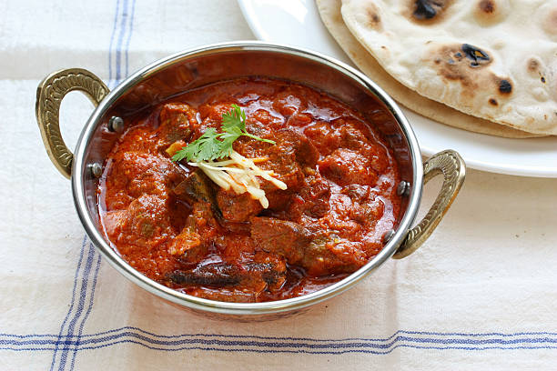

Rogan Josh (Indian Lamb Curry)

Description
I adore this Rogan Josh because it's tasty and makes us obese.
Ingredients
- 1 ½ pounds mutton, cubed
- 1 tablespoon shredded coconut
- 1 teaspoon whole coriander seeds
- 1 teaspoon cumin seeds
- 12 peppercorns
- ¼ cup plain yogurt
- ½ teaspoon ground turmeric, garam masala and chilli powder
- 1 (1 inch) piece fresh ginger, chopped
- 5 tablespoons ghee
Directions
- Make masala seasoning by combining coconut, coriander seeds, cumin seeds, poppy seeds, peppercorns, and cloves in a dry, heavy skillet over medium heat. Cook and stir until toasted and golden brown, 1 to 2 minutes. Remove from the heat.
- Transfer toasted seeds to a blender. Add 1/4 cup water, garlic, and ginger. Blend until combined and set aside.
- Heat ghee in a large saucepan over medium-high heat. Add onion and crushed cardamom seeds. Cook and stir until onions are golden brown, 8 to 10 minutes. Stir in reserved masala seasoning, salt, chili powder, turmeric, garam masala, mace, and nutmeg; cook for 5 minutes.
- Stir in crushed tomatoes; cook for 5 minutes. Add yogurt; cook for 2 to 3 minutes. Add mutton and remaining 1/4 cup water. Reduce heat to low and cook until mutton is tender, 1 to 2 hours.